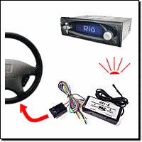

| |

rio car dot org FAQ (Frequently Asked Questions)
Category: Main -> Car installation questions
| Answer | · Where can I find basic information about car audio electronics and installation?
(Entry last updated on January 19th, 2005)Basic Car Audio Electronics
The Install Doctor
Crutchfield's Car Audio Info Center
Download The Crutchfield Guide To Car Stereo Installation
rec.audio.car Frequently Asked Questions
Car Audio Answers
AudioControl Technical Papers
The empeg Sound Page Back to Top
| · Should I install the player myself, or should I have it installed by a professional?
(Entry last updated on February 17th, 2002)The Rio Car is the same size and shape as any other aftermarket stereo, and it has the same installation method and connections.
Whether or not you can install an aftermarket stereo depends on your level of expertise, on your car, and on the installation method. Before we go any further in this discussion, there is something that must be said:
If you decide to install it yourself, the most important thing to remember is to get a proper installation kit from a stereo shop.
Installation kits usually consist of a wiring harness adapter (so you don't have to cut into the car's wiring and you don't have to guess at which wires to connect), and a set of dash mounting brackets and/or trim pieces (so that the stereo screws nicely into the dash without problems).
These kits can be found or ordered from any car stereo installation shop, or from mail-order companies such as Crutchfield.
Whatever you do, do not guess at the wiring of your car. You could blow fuses (or worse, fry your car's electronics) by trying to hook up 12 volt power to the wrong wire. You should always use the wiring harness adapter from the installation kit.
Even if you have one of these installation kits, that doesn't mean the install is going to be easy. It might be easy, then again, it might not.
Best-case scenario:
Your car's dash fits the player perfectly (with the install kit), and it plugs directly into your car's factory amplification system (with the necessary adapters). This is something that could be done by just about anyone in an evening, as long as you have the proper instructions (for example, a Crutchfield Master Sheet).
Average scenario:
The player fits in the dash, but your car has no built-in amplification. So you need to either install an amplifier or daisy-chain the player to a second stereo (assuming the second stereo also fits). This requires a little bit of electronics knowledge, some skill with installing car stereos, and a significant chunk of time. If you're good at this sort of thing, plan on an entire Saturday or even an entire weekend. If you're not good at this sort of thing, then definitely pay a professional to do it.
Worst-case scenario:
Your car's dash requires modification to install an aftermarket stereo, and the factory stereo is highly integrated into the design of the car. This should be handled only by persons who are very experienced with this sort of thing.
In the end, it's up to you. Do you think you have the knowledge and skill to handle the task?Back to Top
| · What are the most common installation issues?
(Entry last updated on November 24th, 2004)Installing the Rio Car player shouldn't be any more troublesome than installing any other aftermarket stereo. Any professional car stereo installer should be able to handle the job quitre easily.
With that said, here are some common issues. Note that these are (for the most part) not specific to the Rio Car player. You could easily run into the same problems installing a Sony CD player, for example.
Separate Amplifier:
The player doesn't have any built-in amplification. It requires an outboard amp. This actually a good thing- all of the best high-end car stereo installations use separate amplifiers. But it does make it something more complicated than just a 10-minute "plug the new radio into the dash" installation.
The player should be treated as a high-end car stereo in this respect. If you're not comfortable with running cables to the car's trunk and installing an amplifier, then you should consider having a professional installer do the job.
You might already have a separate amplifier installed, whether it is an aftermarket amplifier or part of your car's factory stereo system. In that case, the player will be fairly simple to install in place of the existing stereo. For factory systems, there are interfaces available which will allow you to plug it directly into the factory amplifer. An example of just such an installation is here.
Ground loop noise and alternator whine:
This is not specific to the Rio Car player. Any car stereo can suffer from this unless the components are carefully grounded. This is a normal troubleshooting procedure for any professional car stereo shop. If there is noise in your installation, the steps to solve the problem are:
- Understand the nature of what ground loops are. The anatomy of a ground loop can be found here.
- Make sure all devices (amps, crossovers, head unit, etc.) all have the same potential to ground.
- Make sure the ground is good and solid, and uses heavy-gauge cable.
- Make the ground wire runs as short as possible.
- Make sure you have used the proper ground points. Tips here.
- Make sure the devices aren't grounding in unexpected places, such as through the chassis or the RCA cable shrouds.
- Filter the power feeds properly.
- Properly tune the input gains on the amplifiers so that you're not unnecessarily amplifying noise (detailed in the next section).
- Route the audio cables separately from the power cables to prevent inductive and RF noise.
- Double-check all connections, especially power connections. Make sure all wiring splices, crimps, and solder joints are completely solid.
- Check your sled's docking connector to make sure
it doesn't have this problem.
- Try attaching a ground wire between the docking sled itself and a solid ground point on the car's frame.
- If the noise is on the Aux input only, try grounding the sleeves of the Aux input connections.
- Check to see if your player has the EMC capacitors fitted, and if so, remove them.
Here are three excellent documents describing in great detail how to troubleshoot noise:
http://www.installdr.com/TechDocs/999501.pdf
http://www.installdr.com/TechDocs/999502.pdf
http://www.audiocontrol.com/techpapers/tech1002.pdf
Crutchfield has a graphical flowchart for diagnosing noise here. Autoaudio.com also has an engine noise troubleshooter here.
Also, it's possible that a cheaply-made amplifier might cause ground loop noise and/or alternator whine. If sound quality is important to you (and ground loop noise can be defined as a sound quality problem), always consider purchasing high quality amplification and speakers.
Something as simple as a low fluid level in your battery can also cause alternator whine.
There are also noise suppressor devices that can be fitted directly to the alternator output wire in your engine compartment. These differ from the standard kind of noise suppressors in that they go directly after the alternator and reduce noise globally for your entire electrical system (most noise suppressors only go on the wires that run to the head unit). These suppressors can be obtained from stereo installer shops, or via mail order from places such as Crutchfield.
Properly adjust the input gain level on the amplifier(s):
All car stereos that use separate amplifiers should go through this procedure. If you car has multiple amplifiers, perform this procedure separately for each amp with the other(s) disconnected.
- Turn the amplifier's input gain all the way down to zero.
- Turn the player all the way up to 0db (but not overdriven past 0db).
- Set the player's equalizer to flat (0db) and the loudness off.
- Play a loud (but sonically clean) piece of music on the player.
- Slowly turn up the input gain on the amplifier. Increase the gain until either a) you hear distortion coming from the amp or speakers, or b) the amp is playing as loud as you'd ever want it to under normal listening conditions.
- The amp is now playing at its maximum signal-to-noise ratio. Now turn the player back down before you hurt your ears.
In real life, this isn't necessarily the final level you'll leave the amp gain set to. In practice, you'll probably set it lower than this. For instance, if you want to reduce the amp's noise floor even farther, or if you need to balance the levels of multiple amplifiers so that they are similar in volume.
Is the Rio Car going to be your only stereo?
Since the player has line-level inputs and outputs, you can (if desired) hook it up to a regular CD player. If you want to do this, you need space in your dashboard for two full DIN-sized stereos (the Rio Car player and the CD player). Also, depending on how you hook it up, you'll need either line-level auxiliary inputs or line-level outputs on the CD player.
Personally, I don't miss my CD player one bit. I'm perfectly happy with the empeg as my only stereo. But some people don't want to give up their CD players, so the option is there if you really want it.
If you decide to go the two-stereo route, your choice will be: which stereo will come first in the audio daisy chain? A complete discussion of this question can be found as its own separate entry in this FAQ.
And if your dash only has room for one DIN-sized stereo, you're not completely out of luck. Simply run a pair of audio extension cables from the player's aux-in connectors and leave them somewhere reasonably easy to reach. Use these to connect to a portable CD player (for instance, one kept in the glove compartment). For the rare instances when you need to play an actual CD (and trust me, it will be rare), this will do just fine.
Are you trying to add the Rio Car to a factory stereo?
If you are adding the player to an existing factory sound system (assuming you have space in the dash for both units), it may require special adapters. This is a very common problem, and it would be the same if you were trying to add, say, a minidisc player or something.
You would probably need one of the following kinds of adapters, depending on the system and how you want it connected:
- Keep the factory system, and adapt the factory system's CD changer input to accept line-level inputs as if they were from a CD changer. This may require a special module which "tricks" the factory stereo into thinking it's got a factory CD changer attached. Such adapters can be found at www.peripheral-aamp.com, www.blitzsafe.com, and www.rcainput.com. This option is complicated, since the factory systems are designed to make such additions difficult-- they want you to buy the factory CD changer from the dealership instead. And most of the aftermarket CD changer adapters only accept certain brands of CD changers, not generic line-level devices. Even if you can get it working this way, note that it doesn't allow you to control the player from the factory stereo's front panel, so this isn't a way to trunk mount the player. And in some cases, the adapters will only work if an actual CD changer is plugged into them.
- Keep the factory system, and use an "FM Modulator" to have the line level signal inserted into the radio's antenna input. Clarion makes a generic one (part number FM100S) that retails for about $60.00 US.
- If your factory system has a separate amplifier, such as in certain Bose systems, Chrysler-Infinity systems, or certain other "premium sound package" systems, you could adapt the factory amp to accept line-level inputs. These adapters are common, but are often specific to your make and model of vehicle. At that point, you could choose to have the Rio Car as your only stereo, or you could also use another adapter (usually a speaker-to-line-level converter) to connect the factory stereo's outputs the player's auxiliary inputs. An example of such an interface is the Pacific Accessory Corporation OEM-1 interface. An installation using the OEM-1 can be seen here.
In all cases, your stereo installation shop should have access to the necessary parts to get the job done. Some vehicles will be more difficult to adapt than others, make sure to have your installer check out your vehicle ahead of time before committing to anything. Finally, remember that you can almost always simply remove the factory stereo completely and use the player as your only stereo. You probably won't miss the original stereo one bit.
ISO Wiring connector confusion:
Most aftermarket car stereos require a special wiring harness adapter which allows the installer to connect the stereo without cutting your car's wires. On one end, it has a snap-in connector which matches your make/model of car. The other end is dangling wires that the installer solders to your new stereo. This wiring harness is readily available to professional installers. It is normally soldered to the stereo and used as follows:
This will work with the Rio Car player, too. However, the Rio Car player goes a step further, in that it doesn't just have dangling bare wires. It also has a snap-in connector just in case your car happens to be one of the models with an ISO connector plug. In those models of car, you don't even need to solder the player's wires, because the plugs just snap together. Like this:
In case your car doesn't have an ISO connector, the Rio Car player ships with its own ISO wiring adapter . If your car doesn't have an ISO connector, you can either cut the connector off of the player and solder it like any other car stereo, or you can use the Rio-supplied ISO adapter combined with an aftermarket adapter. If you use the Rio-supplied adapter, the connections will go like this:
Reversed ISO wires:
There's just one problem with the whole ISO connector thing. If you own a VW or Audi, these cars have a standard ISO connector. But they have reversed two of the wires. They swap the constant power wire and the ignition-switched power wire. You will need to either cut/solder the wires or alter the connector pinouts in these vehicles.
One symptom of this problem is that the player won't enter standby mode when you shut off the ignition.
Note: It has been revealed that recent VWs might have more than just the two power wires switched. For instance, the blue wire on the player's ISO connector might correspond to a 12v power source on the VW connector. This can cause all sorts of strange problems, such as causing the player's standby light to glow steadily 100 percent of the time.
So if you have a VW, you should definitely use an aftermarket harness adapter instead of the ISO plug. Either that or learn its pinouts and swap the wires on your ISO connector accordingly.
Negative spike bug:
A minor problem was discovered after the shipment of the initial batch of Mark 2 players: Some cars produce a large negative spike on the ignition wire instead of just going to zero voltage when you shut off the ignition. This unexpected behavior confuses the player's power control circuitry, causing strange behavior when you shut off the ignition.
The symptoms of this problem include the unit forgetting its song position and/or going straight into full-power-off mode (rather than sleep mode) when you shut off the ignition. You might also get a loud power-down "thump" from your amplifier.
Click here for more information and solutions.
DIN bay size:
The player is a standard sized Euro-DIN stereo. This is the exact same size as all the other aftermarket stereos on the market. If your car accepts a DIN-sized radio, great. If it doesn't, your installer will have a mounting kit which adapts your car so that it does accept a DIN-sized radio.
The only problem is that the player is a pullout, a style which other stereo companies quit making several years ago. Most cars will accept a pullout radio just fine. Some cars, however, put a piece of fascia trim around the radio which is smaller than the radio itself. Such cars won't accept a pullout radio unless you cut the fascia or find some other alternative.
Doug Morrison came up with a novel solution for this problem when he installed his player into his Toyota. A description, and pictures of his installation, can be found here.
Tuner module and microphone connectors:
The radio tuner is an add-on module, a small box that installs inside the dashboard behind the player. This connects to the small white connector dangling behind the sled. If you're installing the player without the tuner, you will need to dismantle the dashboard if you want to add the tuner at a later date.
There is also a microphone input (small round black connector) on the back of the sled. This may be used in the future for special software features such as voice recognition or automatic volume control. If you wish to use this connector at a later date, you'll need to dismantle the dashboard to reach it.Back to Top
| · What exactly is a ground loop?
(Entry last updated on February 22nd, 2002)A ground loop is what happens when the electricity that's supposed to be powering your audio equipment flows through the audio circuitry instead of through the power circuitry.
This happens in car stereos quite often, because cars use DC power, which is notoriously hard to ground properly. The more components you add to a car stereo system, the more chance you will cause a ground loop. In fact, for each component you add, the likelihood of a ground loop goes up exponentially.
Ground loops sound like noise coming out of the speakers. Humming, buzzing, whining, clicking, popping... all of these kinds of noises can be caused by an ordinary ground loop. Almost all noise problems in car stereo installations are caused by ground loops. For instance, the common term "alternator whine" makes it sound like the problem is the alternator, but usually the real source of the problem is a ground loop.
Note: In the discussion below, I will only show you what a ground loop is. I will not discuss the ways to fix it. That, I'll leave up to the experts. Click here to find some links to documents that will help you troubleshoot a ground loop problem.
Anatomy of a ground loop:
 |
In a perfect world of pretty flowers and little fluffy bunnies, the only thing we'd have to deal with is a single 12-volt positive connection and a single 12-volt negative connection.
|
|
The electrons (which are the electrical energy) have to move between the poles of the battery. That's why the two connections are needed. Without this path, they will go nowhere and no energy is transferred.
This path can happen through any piece of conductive material, such as wire or sheet metal. Note that this diagram is simplified; you will usually see car audio components grounded to a metal point on the chassis of the car, rather than through an actual wire running to the battery.
In this perfect little world, the electrons would only have one path to follow. Nice, simple, easy.
|
|
Unfortunately, we don't live in a perfect world. As soon as you add an extra amplifier, even the simplest of installations has the potential to create a ground loop.
In the illustration at left, all we've done is add an amp. This has doubled the number of connections to the car's electrical system, and added an additional set of audio connections between the amplifier and the stereo. And this is an over-simplified illustration, it doesn't even illustrate all of the other possible connection points, such as the ignition-sense, the headlight illumination, the amp remote, the cell phone mute, etc.
|
|
Even this simple system can cause a ground loop. If the electrons powering the stereo decide that their path between the poles is better via the amp instead of via the stereo, they will use the audio cables as their path.
THIS IS THE GROUND LOOP, the thing indicated by the arrow in the illustration. The main power is using the audio cables instead of the power wires to move between the poles of the battery.
Note that this is only one possible way for a ground loop to develop in this system. For instance, maybe it might happen opposite from what's shown here. Maybe the electrons can move along the stereo's ground wire just fine, but it's the amp's ground wire that they're ignoring.
|
When this happens, your stereo's audio output circuity suddenly becomes part of your car's electrical system. Every single thing in your car that interacts with the electrical system will be amplified by your stereo. The alternator, the spark plugs, the air conditioner, the headlights, the brake lights, the car's emissions-control computer, the stereo's electronics, the electric motor that spins the CD in your CD player (or spins the hard disk in your MP3 player), everything. All of these things will suddenly cause non-musical noise to come out of your speakers.
But why does this happen?
Because somewhere in the system, there is electrical resistance on one or more of the connections which is greater than the electrical resistance found via a path through the audio cables. The electrons take the route that's got the least resistance.
In the illustration above, one of the connections doesn't have a good solid ground. Can you locate the place where the ground needs to be improved? (Hint, it's where the electrons aren't flowing.)
 |
Once you put the frame of the car into the equation, things get even more dicey. Even in this over-simplified diagram, there are several places where resistance could crop up, each one of which could cause a ground loop. Some of them aren't even labeled in the picture. Can you spot them?
When you troubleshoot a ground loop, your job is to locate and eliminate each possible trouble spot, each point of possible resistance. In a complex system with multiple components, this becomes very difficult.
It's painstaking work, because resistance can be caused by about a million different things: Loosely crimped connections, bad solder joints, frayed wires, loose screws, just about anything can increase resistance. Even something as simple as using a different gauge of wire for your various power and ground runs can cause a ground loop.
|
And remember that these illustrations are oversimplified. Every single connection point on your stereo can potentially be the source of a ground loop, even when everything is connected correctly. For instance, a common source of ground loop problems is the radio antenna wire, and it's often overlooked. Or perhaps you've used the power and ground connections from your factory radio harness... do you really know every possible failure point of that factory wire along its entire length between the connector and the battery? I know that in my car, I certainly don't.
Then there's the common problem of multiple simultaneous failures... you think you've nailed it because you fixed one loose wire, but there's still noise because of another problem you missed somewhere else. You have to be absolutely methodical with your procedures when locating a ground loop, to make absolutely sure you didn't miss anything.
Okay, now that you know what a ground loop is, you can start working on a solution to the problem. Click here to find some links to documents that will help you troubleshoot a ground loop problem.
Back to Top
| | · If I am using a separate head unit, in what order should the outputs be connected? That depends on how you want the system to work. Read on.
First of all, let's clarify a few things. By "head unit", we mean any standard aftermarket car stereo, such as a CD player, a tape player, or a minidisc player. Integration with factory stereo systems is a separate (thorny) issue. So for this discussion, we're talking strictly about the daisy-chain order of the line-level audio outputs of various aftermarket components.
Also note that you don't need a separate head unit in order to use the Rio Car. If you install an amplifier in your car, the Rio Car can be your only stereo. That's how I have it, and it works great.
Finally, remember that you need room in the dash for both stereos if you want to do it this way. Not all cars have a double-DIN opening in their dashboards. So make sure you've got the space for it before you assume you'll be installing two stereos.
If you still want to use more than one head unit, there are three different ways to do it:
- You can plug the other head unit's outputs into the "Aux In" of the Rio Car.
- You can plug the Rio Car's outputs into the "Aux In" of your other head unit.
- You can route both devices into a line-level switcher such as the Sony XA-39II, and send both outputs to an external amplifier.
There are advantages and disadvantages to each method.
If you plug the head unit's outputs into the "Aux In" of the Rio Car:
- The head unit must have line-level outputs. Most do, but check to be sure.
- You must have a separate amplifier for the Rio Car's outputs.
- You can use the Rio Car's incredible 20-band fully parametric equalizer (with separate front/rear options) to tailor the sound of your head unit, too.
- You will be using the Rio Car's remote control and front panel to adjust the volume, EQ, and other audio settings.
- The front-rear fading will be controlled by the Rio Car. You will use either the front or the rear outputs from the head unit and leave its fader centered.
- The Rio Car must be plugged into the dash in order for the system to make any sound at all, even if you just want to listen to the head unit's radio tuner or a CD.
- If the head unit has built-in speaker amplification, you can't use it- an external amp system is required.
- If the head unit has a special separate output just for a subwoofer, you can't use that, either (although such a thing is pretty easy to set up yourself if you need it).
If you plug the Rio Car's outputs into the "Aux In" of your head unit:
- The head unit must have a line-level "Aux In". This is not always a common feature, so check to be sure.
- You can listen to the head unit if the Rio Car gets left at home. However, if the head unit is a removable-faceplate or pullout version, then you need the head unit to be plugged into the dash in order for the system to make any sound at all.
- If desired, you can use the built-in amplification that comes with the head unit (if any). This would allow you to skip the hassle of installing a separate amplifier.
- You can't use the Rio Car's equalizer on your head unit. If you need an equalizer for the head unit, you have to install a separate EQ unit.
- You will be using the head unit's remote control and front panel to adjust the volume and other audio settings.
- If the head unit has a separate subwoofer output, you can use it.
- The front-rear fading will be controlled by the head unit. You will use either the front or the rear outputs from the Rio Car and leave its fader centered.
- Some aftermarket head units with CD-changer controlling features might need to use the Aux Ins for that purpose, so check this out if you intend to integrate a CD changer into the system.
If you use a line-level switcher such as the Sony XA-39II:
- The head unit must have both front and rear line-level outputs.
- A separate amplifier is required.
- You can listen to either unit, regardless of whether the other one is plugged into the dash or not. The switcher will automatically select the active unit and route its output to the amplifier.
- Each unit will have its own independent audio settings and controls.
- You won't be using the Rio Car's equalizer to tailor the sound of the other head unit. A separate EQ is needed if you want to EQ the head unit.
Choose the method that works best for you.Back to Top
| · How do I run a subwoofer if the player doesn't have a subwoofer output?
(Entry last updated on January 11th, 2002)Even though the player doesn't have a separate dedicated output for a subwoofer, it's quite easy to hook one up. There are a few different ways to do it.
1) Through an aftermarket head unit:
If you have room in your dash for two DIN-sized stereos, you can use an aftermarket head unit with an Aux input and a subwoofer output, as shown:
There are some limitations to doing it this way, not the least of which is that the aftermarket stereo always looks gaudy and out-of-place in the dash when compared to the sleek-looking Rio Car. See here for more information on how this scheme works.
Note that there are also aftermarket equalizers and crossovers with dedicated subwoofer outputs. These would work in exactly the same way as pictured above, just imagine the CD receiver replaced with a picture of an equalizer.
Personally, I prefer to have the Rio Car as my only stereo, connected directly to the amplifiers. I dislike the complexity of a two-stereo system.
2) With pass-through connectors:
Some amplifiers have pass-through connectors, allowing you to daisy-chain multiple amplifiers easily. Some amplifiers have connectors for a remote level control, allowing you to change the level of the subwoofer even if your stereo does not have a dedicated output for a subwoofer. You can also install an in-line level control if the amplifier does not have one:

In this configuration, the subwoofer is part of the rear fader. When you fade the main speakers forward, you will also reduce the volume of the subwoofer. For some people, this is plenty of control over the subwoofer, and a dedicated subwoofer level control is not needed.
Note that if you're using a single 5-channel amplifier for this purpose (instead of a separate subwoofer amplifier), it might allow you to configure it this way internally. If not, it's still the same principle, you just daisy-chain the rear channels into the subwoofer inputs using a pair of short RCA cables.
3) Fader controls subwoofer only:
If you do not have remote subwoofer level controls, you can use the rear channel as a dedicated subwoofer channel, and daisy-chain your fronts into your rears with a short pair of RCA cables:
In this configuration, you lose the ability to fade front/rear between your main speakers, while the fader now controls the subwoofer level. For some people, this is fine. It depends on how you like to control the sound in the car. This happens to be the way I have my system configured. It is simple and it works very well once you've balanced the front/rear main speaker levels with the amp's onboard gain controls.
4) With Y-adapters:
If your system does not have pass-through connectors, you can do variations on the above schemes, but use Y-adapters instead of pass-through connectors:

Whether or not this works well is going to depend on your particular system. I, personally, never had any trouble when I used Y-adapters in this configuration. Some people will say that you might lose some of the level voltage on the split connection, but I never noticed any signal loss. There is also the possibility that this might induce a ground loop, but you run that risk any time you run separate/multiple amplifiers anyway. Each component you add to the system increases the odds that you'll cause a ground loop, so just watch out for it and deal with it accordingly.
Back to Top
| | · What are the known issues installing a Rio Car into my (model X) car? As far as installations go, it's just like any other aftermarket car stereo. So what you should really be asking is, "what are the issues for installing an aftermarket stereo and an amplifier in my car?"
As you can see, because there are so many different cars, the answer to this question is going to be too vast to cover in one place.
The best place to find out about installation issues for your particular model of car is by participating in internet discussion forums specifically for that car. A simple web search will probably reveal many web-based bulletin boards for discussing your particular car with other owners. You can also participate in Usenet newsgroups related to your car. There, you will find examples of how other owners have fared when installing aftermarket stereos.
You can also check the Installation Notes forum at the Unofficial Empeg BBS. Some good information can be found there, but there's no guarantee you'll find anything about your particular model of car. Back to Top
| · At what angle(s) can I mount it in the dash?
(Entry last updated on September 20th, 2004)The ideal mounting angle range is from 0 to 16 degrees, inclusive. This means you can mount it flat or at any angle tilting backwards up to 16 degrees. This covers most modern cars very well.
The mounting angle is important for a couple reasons:
The disk drive's shock-mount tray is meant to work best within that range. If you mount it outside that range, you might have problems with the shock absorbers not working properly if your car hits a bump, which could cause problems with the disk drive or display cables, or might cause the disk tray to bump against the back of the display board.
Also, the disk drives themselves (off the shelf laptop disks) are meant to operate within that range. Outside that range of angles, the disks will have a different load on their spindle bearings, which might shorten the life of the disk drives.
Some users have mounted it at steeper angles (including vertical) and reported that it seems to work fine that way. You're welcome to try this, but it's at your own risk. Definitely be prepared to check the shock mounts and other internal components regularly, to make sure that nothing is getting damaged because of it. Back to Top
| · What's the best way to keep the player safe from harm or theft?
(Entry last updated on June 11th, 2008)When you're not driving, it's best to remove it from the dash and take it with you indoors. This will protect it from theft, as well as keep the hard disks from being exposed to extreme temperatures. The full pullout design is a great advantage in this situation.
For the dash opening, there are a few different schools of thought. Some feel that the hole in the dash is a message to thieves that there's no stereo here, and therefore nothing to steal. On the other hand, thieves might break into your car anyway, looking for a stereo to be hidden under the seat or in the glove box. I once had a removable-faceplate stereo stolen, even though the faceplate had been removed, because of this very mentality.
Some think you should cover the dash opening with a fake plate with a bunch of dangling wires, to make it look like the stereo had already been stolen. Or perhaps with a fake plate that makes it look like a cheap radio not worth stealing. These might or might not deter a thief, but would look ugly in the process.
Personally, I go for the full-stealth approach. There are photos of my Stealth install here. Outside the car, there are no visible signs of a custom stereo installation. All speakers are under the factory grille points or under upholstery. The amplifiers are in the trunk, and not visible from outside the car. I have also purchased a blank plastic plate from the car manufacturer to cover the dash opening. This plate is the same part that's used to cover the dash opening in cars which are sold without a stereo. It even has the car company's logo etched onto it, so it looks totally authentic. When I leave the car, I pull the player out of the dash and take it with me, then I cover the hole with this plate. From anyone looking at the outside of the car, it appears as though there is no stereo installed at all, and therefore nothing worth stealing.
Even if someone does break into the car, I've taken the player with me so that the only thing to steal is a couple of amplifiers. Those are a lot easier to replace than the player.
Another style of stealth installation is to cover the open hole with a false face that looks exactly like the factory-installed radio; factory radios are not usually a target for thieves. An excellent example of this can be seen here. Note that this only works as a theft deterrent if it's completely authentic. Anything that looks even slightly "aftermarket" could become a target.
Sometimes, there will be situations where you can't take the player with you when you leave the car. I don't recommend leaving the player in the car, either visible or hidden. Rather, I would simply leave the player at home before departing on those kinds of trips.
Carrying Cases
For carrying the player with you, the empeg international store used to sell a very nice carrying case for the unit, which allowed you to take it just about anywhere very comfortably. The case was small, easy to carry, and made traveling with the empeg a breeze. It even had the empeg logo embroidered on the front. Unfortunately, they are sold out of these cases and no more will be made.
Bansai8 Creations makes high quality leather carrying cases for the player, complete with memory-foam padding. These are a similar design to the original empeg carrying cases. Click here to order one.
The most secure carrying case would be a padded hard-shell unit such as a Pelican or Serpac brand case. These are designed to carry photo equipment or similar items. Some users report great success with Pelican cases. These are bulky, however.
Many owners have reported that certain soft-shell cases designed for cameras work well. If you're stuck trying to find a case for the player, it might not hurt to try browsing around a camera store. The CaseLogic company also sells a large selection of cases for things about the same size as the car player; for example, their cases for portable disk drives might work.
It has also been reported that some soft-shell cases designed to carry portable video games, such as the GameBoy Advance, are large enough to hold the car player. So a trip to your local video-game retailer might prove fruitful. Pelican even has one of these soft-shell GBA cases available, model PP1500.
If you are concerned about losing the player by leaving it in a restaurant or something, you can put your name and your work telephone number in the case. You can also use the empeg Logo Editor software to put that information on the player's boot-up screen for additional security.
At the current time, the player software does not have any built-in "code" security to prevent it from being used by a thief. The technical support resources required to support such a system are too great to make it feasible. However, if your player is stolen, contact support and inform them. Back to Top
| | · Can I run 4 volt outputs into 1 volt inputs? Yes, no problem. You can also run 1-volt outputs into 4-volt inputs.
The Rio Car has a plethora of plugs on the back:
- On the unit itself, there is a pair of line-level home audio outputs. These are 1-volt.
- On the car docking sleeve, there are six line-level connectors. A pair of front outputs, a pair of rear outputs, and a pair of auxiliary inputs.
- The docking sled auxiliary inputs are 1-volt.
- The front and rear docking sled outputs are 4-volt.
When mixing components, in most instances, it's perfectly fine to plug a 4-volt output into a 1-volt input, and vice-versa.
For example, if you want to route the Rio Car's audio into the "Aux In" on a CD player, it should be fine to put the car sled's 4v front outputs into the CD player's inputs, even if the CD player is designed to accept 1v.
The only difference you'll probably hear between the two is overall volume level. Simply adjust the volume (and/or input gain) on the components involved until everything sounds right.Back to Top
| · Can I hook up a steering wheel remote?
(Entry last updated on January 16th, 2012)Yes. There are a few different options for steering wheel mounted remote control.
Third-party Infrared Steering Wheel Remotes
 |
These are infrared devices which attach to your steering wheel and work like an infrared remote control. Some clamp to the wheel itself, others are designed to attach to the back side of one of the spokes, behind the wheel.
Models which are known to work well are the Kenwood KCA-RC700 and the Pioneer CXB3488 (SR80 in the US). Other models may work well, too, if they output IR frequencies in the proper range for the car player's IR sensor.
The Kenwood unit works without modification, as the car player responds to Kenwood IR commands by default. The Pioneer unit (and many others) will require a special custom hacked kernel to be installed on the car player, and also require edits to the config.ini file on the player. See here for more information about Hijack.
Note that for a third-party remote to work, it must be in the proper frequency range for the player to recognize it. For example, it's suspected that the Sony RM-X5S remote will probably not work with the player because it uses a high frequency band. There's no way to tell just by looking at the remote whether or not it's in the proper frequency range, so if possible, your best bet would be to try out the remote with the Hijack kernel's "Button Codes Display" feature before you buy it.
|
Factory-to-Infrared Integration
|  |
These integration devices turn your car's factory radio steering wheel controls into infrared commands compatible with aftermarket radios.
These are not very common, but one company which deals in this kind of device is Pacific Accessory Corporation. Their unit is called the SWI-X.
|
Sony Wired "Stalk" controls
 |
These are small Sony joystick controls designed to control Sony stereos. They mount on the side of your steering column. Sony model numbers are RM-X4S and RM-X2S. These can plug directly into the add-on tuner module for the Rio Car. Note that you must purchase the add-on tuner module for this functionality to be available.
|
Factory-to-Sony Converters
 |
These are third-party integration devices designed to connect factory steering wheel controls directly into the "stalk port" on Sony-brand stereos. If one exists for your model of car, then these will also plug into the add-on tuner module for the Rio Car. Here is a list of companies that (in the past at least) had Sony stalk adapters:
Connects2
Car Audio Centre
Axess Interface
After using one of those custom connectors, you might need to use Hijack's "Button Codes Display" and "IR_Translate" features to customize the operation of the buttons, or indeed, to get them working at all in the first place. Details can be found here and here.
If you happen to know the details of the circuitry of your steering wheel buttons, you can "roll your own" factory-to-Sony conversion system. The Sony interface is simply a set of predefined resistor values, so it's possible to construct a resistor network if you're good with electronics. Details of the resistor values can be found in the Developer Info section of this site, here, and Hijack-related information for custom configurations can be found here.
|
Back to Top
| · Can I mount it in the trunk or the glove box?
(Entry last updated on June 4th, 2003)Not recommended. Much of the user interface depends upon your ability to see the on-screen menus so you know what you're selecting.
If all you ever wanted to do was to hit next/previous track and adjust the volume, then sure, you could mount it in the trunk. You could use some sort of infrared repeater system or a variation of the steering wheel control interfaces to control it. It would work.
But why? One of the reasons that the Rio Car is such a great product is its ability to search for and select music out of your vast collection. This requires seeing the screen.
Do you want to mount it in the trunk because there's already a stereo in your dash and no room for the Rio Car? Dump the existing stereo. Trust me, you won't miss it.
The Rio Car isn't like a CD changer. It's a completely different way of listening to your music, and you're going to want it up there where you can get to it.
Now, if after reading the above, you're still serious about using it in the trunk, and you happen to have a spare PalmPilot, you can use Palm Empeg or Palantir to control certain aspects of the player from the Palm's screen. You would probably also need an infrared repeater system or some other way to remotely control the player itself. The player is not as full featured or as user-friendly this way, and these programs require some Linux knowledge to install and use correctly. For instance, Palantir requires that you have an infrared connection to the player, and it can only queue up tunes for playback, it can't remotely control all aspects of the player. But it's one possible solution if you have no other alternative.
There are also ways to use serial commands, VNC, or XML to remotely control the empeg from a computer. But if your problem is that you don't have space in your dash for the empeg, then you won't have space in your dash for a computer, either. Back to Top
| · Can I run a display extension or 'Y' off the display board?
(Entry last updated on May 24th, 2009)A direct extension is not recommended. Simply extending the wires to the display board can cause very bad effects, possibly even as bad as blowing the CPU, because some of the signals are unbuffered 3.3v signals coming directly out of the CPU into the display board. There would be grounding problems, and the high speed data would probably get corrupted on the way.
One intrepid user actually invented a proper display extender with its own buffer circuitry and extension interface. This was a significant expense of time and money, and the only reason he was able to do it was because he worked for an R&D firm with a very flexible budget and was allowed to "play" with the project. Someone later produced a handful of these, using his original design, and then sold them through the Empeg BBS.
It was a similar situation to the video-out project mentioned here.
Creating a "Y" to another display such as an LCD is tricky and essentially amounts to creating a whole new display board just like the first one. This would also require a significant expense of time and money.
Back to Top
| · Can I output the display to a video monitor?
(Entry last updated on January 24th, 2007)Not easily. There is no "video out" connector on the unit, and no way to convert the display signals into a TV-compatible format.
There is the possibility of connecting a video title generator to the player's serial port. A configuration tweak will cause the player to put song data out on its serial port. This would (at significant expense and hassle) get you bare-minimum ASCII track titles on the TV screen.
But this still wouldn't help you to mount the unit in the trunk, as it wouldn't give you any feedback to infrared commands or button presses.
Some users have done this, though. Do a search on the Unofficial Empeg BBS to find more information.
One lateral-thinking user was able to get a decent video display simply by mounting a cheap CCD camera aimed at the player's front panel. Details can be found on the Unofficial Empeg BBS. If you want to try this, you might need to use an infrared filter over the camera lens, because some CCDs will pick up the infrared glow of the cathode filament wires.
If you're serious about trying to do an actual true video out for your player, it has been done. Once. It was commissioned by a special customer who was extremely serious about making a video out board. It was demonstrated at one of the user meets, and it was billed as "the most expensive empeg ever made". It required designing and building a custom interface with 516 individual parts, on a double-sided 8-layer PCB. The components included an ARM 7500 CPU, 4MB of RAM, and 1MB of flash. The board took about 10 months to design and manufacture, and even after the board was done, it took about 20 hours of work to assemble and solder the components onto just one of the boards by hand. The total cost of design/parts/assembly, although not publicly disclosed, is hinted to be in about the same price range as a reasonably expensive sports car. If you still want to try it, the plans were posted here in January 2007.
Sure you're still serious about trying to make the player output to video? Or is simply mounting it in the dash and connecting an amp starting to sound more attractive?
Back to Top
| · Can it control a CD changer, or be controlled as if it were a CD changer?
(Entry last updated on February 28th, 2002)No. There's no interface of that kind on the Rio Car player. It is designed to be a complete self-contained stereo, it is not meant to emulate a CD changer, nor is it meant to control a CD changer.
First of all, CD changers all have proprietary interfaces. There's no way it could universally control all CD changers, at least not in a cost-effective way.
And why would you want it to control a CD changer anyway? It's meant to free you of the hassle of ever having to carry CDs around. Its capacity is orders of magnitude greater than any car CD changer.
If all you want is to listen to the occasional CD, then just get a cheap portable CD player that you can plug into its aux-in. Get the cheapest one you can, because it'll just gather dust in the glove compartment, trust me.
As far as controlling the player as if it were a CD changer, that's something that just isn't implemented. The empeg team has created this kind of product in the past for OEM customers, but the Rio Car player isn't one of those products.
The problem with making your MP3 collection behave like a CD changer is that the controller limits you to 99 tracks in a playlist. What if your Trance Mixes playlist is 235 tracks long? One of the advantages of the Rio Car is the way it lets you organize, search, and select your music in a variety of flexible ways. Boxing it into the CD/TRACK mentality is missing the point.
If an "MP3 Changer" is what you're really looking for, there are other products on the market which do this specific task. The Rio Car is better, though, since it doesn't box you into the CD/TRACK format.
Note: The above is only talking about a system where you want the Rio Car to control a CD changer or vice-versa. If all you want to do is connect the two devices together using line-level inputs and outputs, and you don't care about one unit controlling the other unit, then that's a whole different story. Click here or here for information on these kinds of connections.
Back to Top
| | · Is it difficult to remove the car docking sled? For instance, to install the tuner or move to another car? It's no more difficult to remove the sled than it was to install it in the first place.
If you installed it yourself, then you already know what's involved to remove it. The hard part is usually the wiring connections. The sled itself usually just involves bending out the tabs and removing it.
If you had a professional install it, then you should probably have a professional do the moving/removing work. Back to Top
| · What's up with the 'Grounding leads' on the Mark 1 player?
(Entry last updated on October 5th, 2002)The Mark 1 player had a different kind of output stage than the Mark 2 and Rio Car players. The Mark 1 used something called floating-ground output, which caused problems with some amplifiers.
The Mark 1 player shipped with ground adapters. These were RCA connectors with grounding wires attached to the shrouds. Some Mark 1 owners will need to use these adapters to prevent ground loops and alternator whine. The proper connection scheme is to insert them into the signal chain, attached at the amplifier end of the connection. Then the ground wires need to be connected to the same grounding point that is used by the amplifier.
So the Mark 2's output stage was completely redesigned, and all noise and grounding problems were solved. The Mark 2 and Rio Car should not have any more trouble with ground loops than any other aftermarket stereo. Back to Top
| · How can I fix the gap around the edge of the docking sled??
(Entry last updated on November 24th, 2004)Depending on how your player is installed, there might be a small gap between the edges of the sled and your dashboard.
A properly-made installation kit should get rid of this gap, but if you're a do-it-yourself type (like me) and didn't use an installation kit, you might get a small gap.
I fixed this on my car by cutting a "hollow rectangle" shape out of the cover of a black plastic notebook, using an x-acto knife and a metal ruler. Then I glued this trim piece to the front edge of the sled. Photos and details of this procedure are located here. Back to Top
| | · Will installing the player affect my car alarm or my keyless-entry system? It might, but there is a simple and easy fix. Click here for details. Back to Top
| · I have no room directly behind the sled for my tuner module. Can I make the cable longer?
(Entry last updated on February 13th, 2002)The tuner module should have shipped with an extension cable just for this purpose. (See here for one possible problem with the extension cable if you decide to use it.)
If this still isn't long enough, extending the length of this cable is not recommended as it would tend to pick up noise if it were much longer.
Often, careful and creative placement of the tuner module, wires, and connectors will allow the items to fit behind most dashboards. Try to carefully route and place all of the wires rather than just cramming everything in.
If there is a problem getting the car's antenna cable to reach the tuner module, then it should be no problem to extend the antenna cable. It's the cable that goes between the tuner and the sled that shouldn't be lengthened. Back to Top
| · Do I need to combine the front and rear outputs of the player when connecting to a 2-channel input?
(Entry last updated on December 19th, 2002)No.
Just use either the front output or the rear output, and leave the other pair disconnected. Do not attempt to combine the front and the rear outputs.
More explanation:
Sometimes car installations will involve connecting the player to an amplification system that only has a single pair of L/R inputs. For example, if you're connecting the player to the "aux in" of a CD player, you'll find that there's only two input plugs (L/R) instead of four. Or maybe you're connecting to an external equalizer or active crossover system, which also only has a single pair of inputs.
By default, the outputs from the Rio car player are the same for the front and the rear. When the fader is in the center, both the front and rear outputs are at full volume. When you adjust the fader to the front, the rear outputs are reduced in volume. When you adjust the fader to the rear, the front outputs are reduced in volume. So, just leave the fader centered to get full output on all four plugs, and use only one of the two pairs to connect to your other device.
The opposite applies, too. For example, if you're connecting a CD player to the Rio car player's "aux in" connectors, use only the front output or the rear output from the CD player and leave its balance control centered. Back to Top
| · What are the pinouts of the sled docking connector?
(Entry last updated on August 5th, 2003)Mark 1 pinouts are listed here, Mark 2/Rio Car pinouts are listed here.
Mike Tempsch has created color-coded pictures of the pinouts, available here and here. Back to Top
| · I can't get my cell phone mute feature to work.
(Entry last updated on March 4th, 2004)First, make sure it's wired correctly. The green wire coming off of the sled wiring harness is the cell phone mute, and should be connected to the corresponding wire on your cell phone kit.
Next, make sure there's not a conflict with the serial port plug in the docking sled. The cell phone mute wire shares a pin with the serial port plug. So if you're using the serial port plug for something else such as a GPS, you might want to make sure that the corresponding wire is disconnected from the serial plug.
Then, open the "Configure Player" screen in Emplode and select the "Mute" tab to control how the player should behave when the cell phone mute is on. The behavior will depend on whether your phone kit's mute line goes high or goes low when it's off-hook, you need to tell it which kind of phone mute you have. If you don't know, you can test your phone kit with a multimeter.
Note that some phone kits, instead of switching between 0v and 12v, will switch between grounded (0v) and open-circuit. In that case, the 0v/12v sensing won't work and you'll need to make a modification to the wiring in order to make it work. Attach a 10k ohm resistor between +12v and the mute wire, similar to the power antenna solution described here. After that, the 0v/12v sensing should work. Back to Top
| · Now that I've got my player installed, how do I get the best sound?
(Entry last updated on January 19th, 2005)Have a look at The empeg Sound Page, created by Brad B. from the Unofficial empeg BBS. He gives instructions on how to set up the various sound features of the player, including the equalizer. Back to Top
|
|
|
|

{kind=link}
{kind=link}